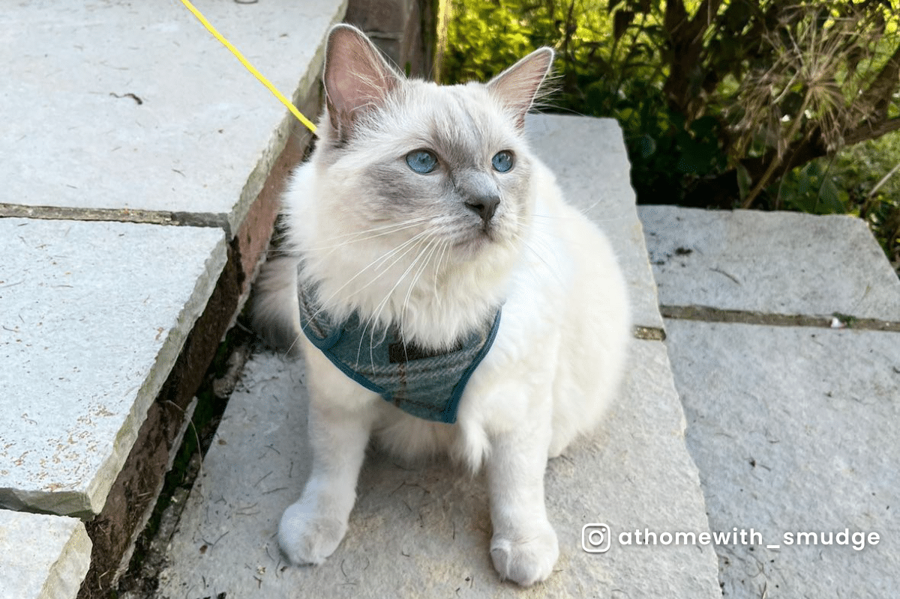

Born: Unknown
Found: 04/02/2026
Age: Unknown
Favorite Food: Felix Sensations Jellies Favourites & As Good As It Looks
Sex: Male
Cloud randomly walked into the house while I was at home sick from school. Cloud ate and walked around the house with very little hesitation, we then got a seperate food bowl for him and he has come back basially daily for five months.